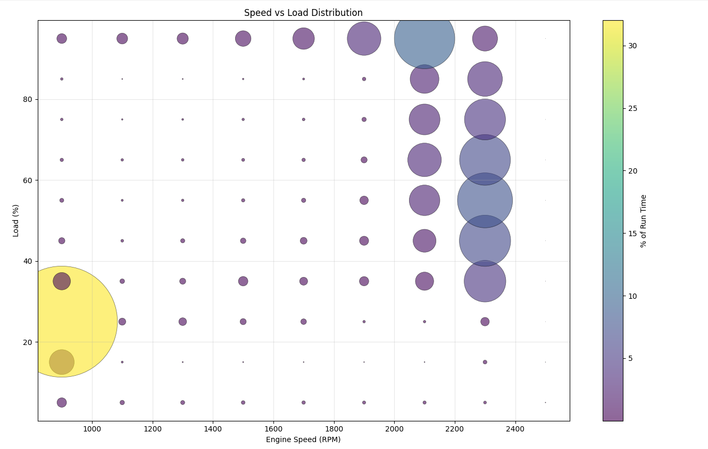

Speed vs Load Distribution
Background
The Speed vs Load Distribution chart plots lifetime engine operating time across a two-dimensional grid of RPM and load. The chart renders as a bubble plot — each bubble sits at a speed/load intersection, and its size represents the accumulated hours the engine has spent at that operating point.
This is the most complete picture of how a machine has actually been used. Where the Speed Band chart shows only RPM distribution and the Time at EGT chart shows only thermal history, the Speed vs Load chart combines both dimensions into a single view that reveals whether the engine is being loaded appropriately for the speed at which it is running.
What to Look For
Bubble mass is concentrated in the upper-right portion of the grid — high RPM paired with meaningful load (above 40–50%). Some clustering at lower RPM / lower load is expected for startup, idle periods, and light repositioning work.
This profile indicates the engine is being loaded consistently when it is running at speed, which keeps combustion temperatures high and the aftertreatment system in its effective operating range.

A large bubble or cluster of bubbles in the lower-left corner — low RPM, low load — is the signature of extended idle or near-idle operation. The machine is running but not working. This is the most common operating pattern on compact equipment used for intermittent tasks with long wait times between them.
Cross-reference with the Speed Band chart to see how much total time is in band 1 (< 1,250 RPM), and with the Time at EGT chart to confirm the thermal consequence. A machine with a large low-left cluster will almost always show heavy accumulation in the low EGT temperature bands as well.
Low Load Operation — Consequences
| Issue | Description |
|---|---|
| DPF clogging | Low load means low EGT, which prevents passive DPF regeneration. Soot accumulates faster than it can burn off, increasing active regeneration demand and shortening filter life. |
| Wet stacking | Incomplete combustion at low load allows unburned fuel and soot to condense in the exhaust, causing black residue buildup. |
| Carbon deposits | Low combustion temperatures promote carbon buildup on injector tips, EGR passages, and piston rings. |
| Cylinder glazing | Low combustion pressure prevents piston rings from seating properly, polishing cylinder walls and degrading oil control over time. |
| Oil dilution | Unburned fuel can pass the piston rings and dilute the crankcase oil, reducing lubrication effectiveness. |